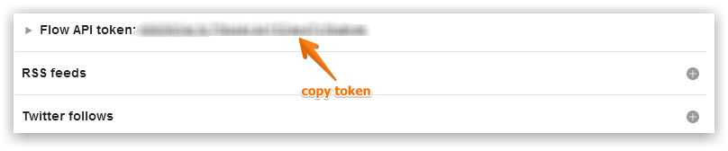
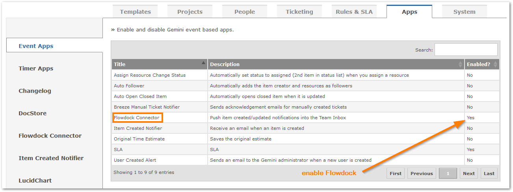
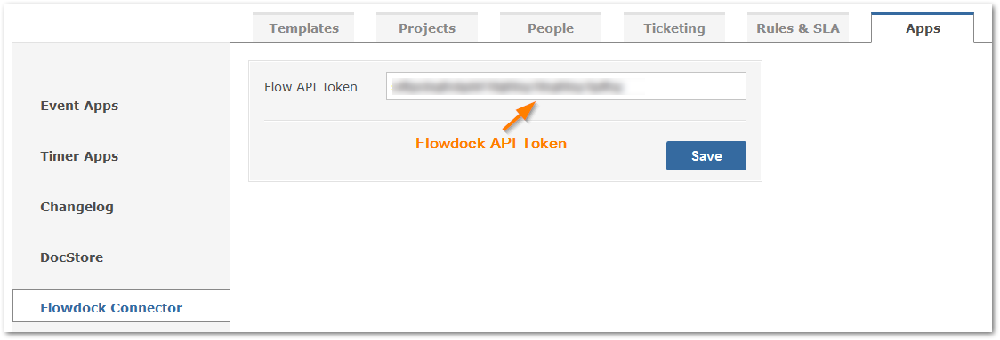

Flowdock is a centralized dashboard for technical teams providing real-time updates, feeds and status information from popular tools and bespoke systems. Updates from Gemini can be streamed directly into any Team Inbox within Flowdock.
Follow the below instructions to configure Gemini and Flowdock.
Log into Flowdock and copy the API token for the Team Inbox you want to link with Gemini

Ensure the Flowdock app within Gemini is enabled.

Paste your Flowdock token.

Every item created or updated will know appear in your Team Inbox within Flowdock.